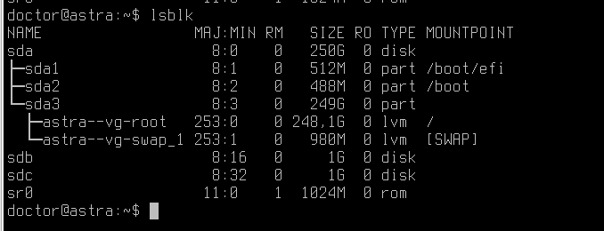
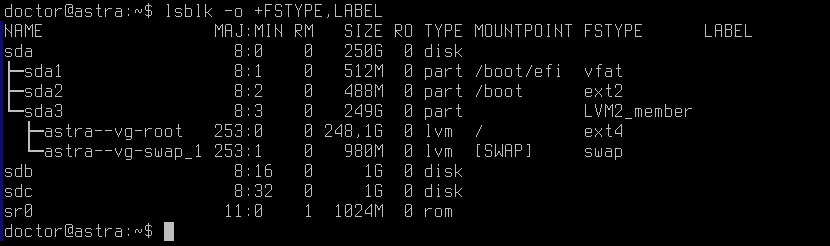
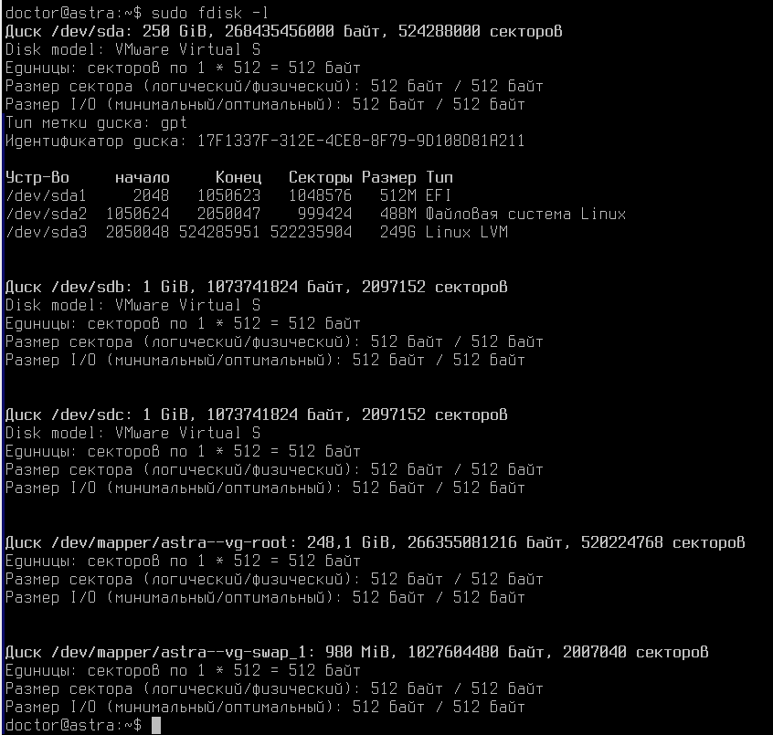
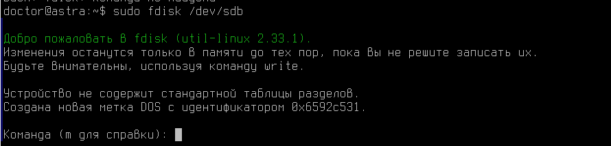

Лабораторная работа №6. Тема: "Расширенное администрирование устройств хранения данных"
<---- Обратите внимание на консольный сервер в левой части экрана, вам следует использовать этот сервер для выполнения лабораторной работы
Цель работы
Цель работы
- Приобрести навык настройки расписания для запуска заданий через cron;
- Научиться использовать таймеры systemd для запуска заданий по расписанию.
Оборудование, ПО:
Виртуальная машина или компьютер под управлением ОС AstraLinux 1.7 в режиме защищенности "Воронеж" или выше.
Ход работы:
Что будем делать сейчас?
В жизни, пожалуй, каждого администратора настанет момент, когда однажды он захочет автоматизировать свои рабочие процессы.
Например, чтобы в 21:00 все компьютеры в офисе отключались или чтобы в 22:00 сервер автоматически отправлял журнал отчета о работе за весь рабочий день - и многое много другое, что хотелось бы автоматизировать, в-первую очередь для удобства, а во-вторую таким образом мы сможем снизить ошибки связанные с человеческим фактором.
В этом материала мы, поговорим о инструментах настройки выполнения различных задач по времени - такие как systemd и cron, а также о incron — который следит за событиями в файловой системе и выполняет команду при наступлении указанного в задании события.
Начнем с какой-нибудь простой задачи, которую автоматизируем по времени выполнения через crontab
Например, предположим, что мы хотим выводить текущее время каждую минуту в отдельный файл /opt/time.log.
Да, на практике такая задача, вероятно, будет бесполезной - но это лишь начало!
Создайте скрипт /opt/script.sh со следующим содержимым:
#!/bin/bash
echo "Current date and time: $(date)"Не забудьте выдать новому скрипту права на выполнение.
После этого, попробуем в crontab настроить выполнение данного скрипта каждую минуту.
Откройте общий системный конфигурационный файл - /etc/crontab и в конце допишите строку:
*/1 * * * * root /opt/script.sh >> /opt/date.logПока дожидаемся пары минут, чтобы точно убедиться в работоспособности нашего правила crontab обсудим описанное выше правило -
Сначала прописывается значение в какую минуту будет выполняться скрипт.
Далее значение часа, затем число месяца, порядковый номер месяца, а в конце день недели выполнения скрипта или команды.
В конце указывается имя пользователя, от имени которого будет запускаться скрипт.
Для того, чтобы удобнее работать с crontab и получить точную оценку в какой промежуток времени будет выполняться скрипт, удобно воспользоваться сайтом - https://crontab.guru/#*
А что означает запись - */1
В этом примере, это означает с каким "шагом" выполняется поставленная задача - буквально каждую минуту.
Пока мы читали этот текст - минута прошла! Пойдем смотреть содержимое файла /opt/date.log
Как мы можем заметить правило работает! В каждую 1 секунду новой минуты выполняется скрипт.
Круто, а что так можно автоматизировать?
Почти все, за исключением запуска графических утилит.
В этом примере мы настраивали общий файл /etc/crontab, для его редактирования нужны права администратора.
Если у вас есть задача сделать выполнение заданий по расписанию с правами обычного пользователя, можно воспользоваться командой:
crontab -eНо, по умолчанию, пользователи не имеют прав на настройку пользовательского crontab
Для того, чтобы включить данную функцию в Astra Linux необходимо сделать команды:
- Добавить имя пользователя в файл -
/etc/cron.allow - Установить права доступа на файл
/var/spool/cron/crontab
echo doctor >> /etc/cron.allowsudo chmod 1733 /var/spool/cron/crontabsИли просто добавить пользователя в группу crontabs
sudo usermod -a -G crontab <username>Затем повторим команду
crontab -eКонструкция файла такая же, как у общей версии /etc/crontab
Единственное отличие - указывать имя пользователя не нужно.
С помощью команды, указанной ниже, можно посмотреть все настроенные пользовательские задачи
crontab -lА сам конфигурационный файл пользователя хранится по пути - /var/spool/cron/crontabs/doctor
Теперь познакомимся с инструментом systemd timers
Несмотря на то, что cron, возможно, самый известный планировщик задач, таймеры systemd могут выступать в качестве альтернативы.
Приемущества
Основные преимущества использования таймеров приходят от каждой задачи, которая имеет собственную службу systemd. Вот некоторые из этих преимуществ:
- Задачи могут быть легко запущены независимо от их таймеров. Это упрощает отладку.
- Каждая задача может быть настроена для работы в определенной среде.
- Задачи могут быть присоединены к cgroups.
- Задачи могут быть настроены в зависимости от других юнитов systemd.
- Задачи регистрируются в журнале systemd для легкости отладки.
Попробуем создать таймер, например, чистку кэша оперативной памяти каждую 1 минуту.
P.S. На реальной рабочей станции чистить кэш оперативной памяти каждую минуту крайне не рекомендуется. Это исключительно тестовый пример.
Создайте файл по пути - /etc/systemd/system/clean.timer
Содержимое должно быть следующим:
[Unit]
Description=Clean Cache Service
[Timer]
OnCalendar=*:0/1
Persistent=true
[Install]
WantedBy=timers.targetЗатем, создадим скрипт очистки кэша оперативной памяти - /opt/clean_cache.sh
#!/bin/bash
sync
echo 3 > /proc/sys/vm/drop_caches
echo "$(date)" >> /var/log/dateПосле этого, необходимо создать сервис systemd - /etc/systemd/system/clean.service
[Unit]
Description=Clean Cache Service
[Service]
Type=oneshot
ExecStart=/opt/clean_cache.shИмя service и имя timer должны совпадать
Как только мы оформим скрипты systemd, необходимо применить их в операционной системе, с помощью следующих команд:
sudo systemctl daemon-reload
sudo systemctl enable clean.timer
sudo systemctl start clean.timerА теперь самое интересное, работает ли?!
Посмотрим статус службы clean.timer
Как можно заметить, через systemd timers легко видно как давно отработал скрипт, сколько времени он работает суммарно и статус последнего завершения задачи (чего, кстати, через crontab не видно)
А также, через journalctl все timers отчитываются в общем журнале логов о своих успехах.
Практическая работа
- Создайте таймер в
/etc/crontab, для выполнения команды"date >> /opt/timefile"после каждой перезагрузки ПК.
Заключение
В рамках этой лабораторной вы научились работать с блочными устройствами, создавать LVM-массивы.
В следующем материале вы познакомитесь с Запуском заданий по расписанию или в зависимости от изменений в ОС!
Благодарю за чтение и успехов вам в обучении!